I buy more books than I read. And I read less than I should. Anyway,
here are the books I have been reading.
This isn’t a review page, just a simple log. DNFs are not listed.
recently
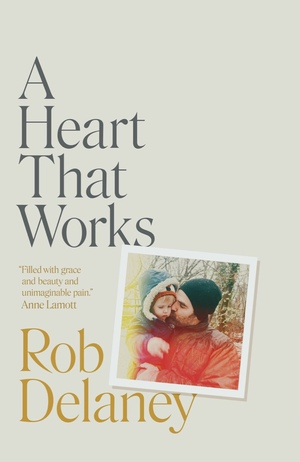
A Heart That Works - Rob
Delaney
2023
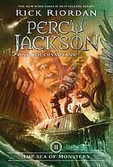
Percy Jackson and the Sea of Monsters -
Rick Riordan
2022
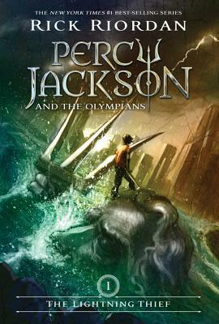
Percy Jackson and the Lightning Thief -
RickRiordan
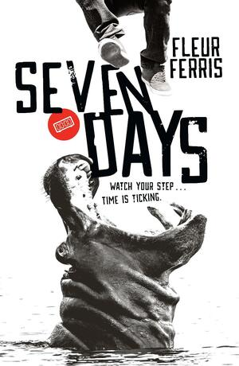
Seven Days - Fleur Ferris
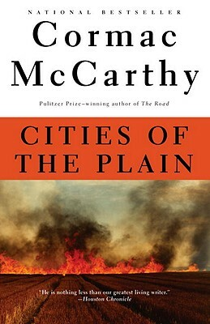
Cities Of The Plain - Cormac
McCarthy
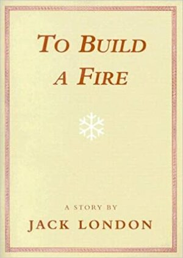
To Build a Fire - Jack
London
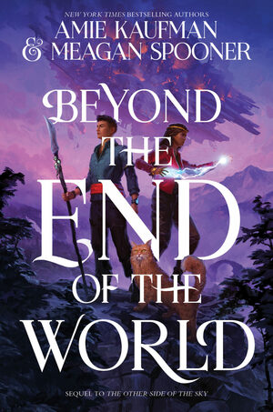
Beyond The End Of The World - Amie
Kaufman and Meagan Spooner
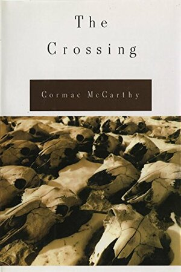
The Crossing - Cormac
McCarthy
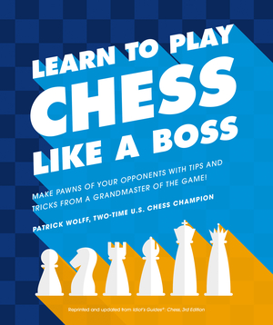
Learn To Play Chess Like A Boss - Patrick
Wolff
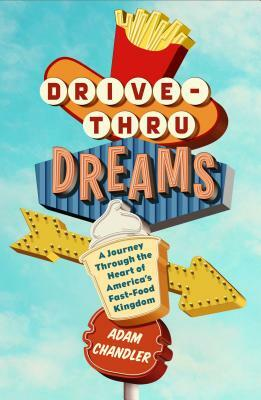
Drive-Thru Dreams - Adam
ChandlerSave The Cat - Blake Snyder
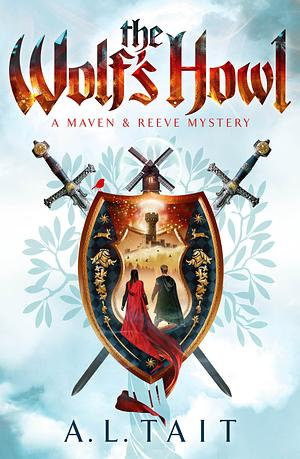
The Wolf’s Howl - A.L. Tait